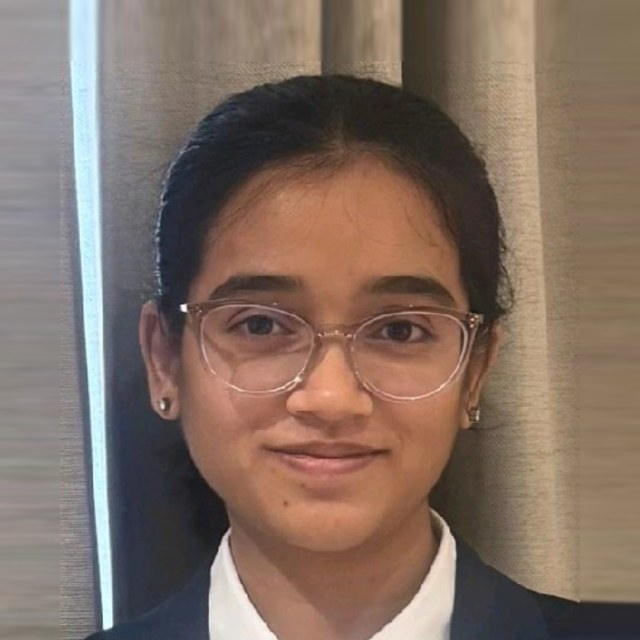

Chemistry & Biodiversity
Kothapalli Bonnoth Tejaswini
Product & Operations · MBA, Business Analytics, IIM Ranchi
I started as a chemistry research student at IISER Tirupati, with published work in organic chemistry and organometallic chemistry, and then transitioned into an MBA in Business Analytics at IIM Ranchi (Indian Institute of Management Ranchi). Today I work across product prototyping, go-to-market, and B2B and D2C growth, using data to decide what to build and how to launch it.

About
Open to work
I am actively looking for Product Management roles. I am also open to Product, Business Analyst, Operations, Account Management, Marketing, Business Development and Founder's Office roles.
I bring a scientist's discipline (form a hypothesis, test it, read the data honestly) together with hands-on product, operations, growth and sales experience.
If you're hiring for any of these roles, I'd love to talk. Reach me at kbonnoth.tejaswini@gmail.com or on LinkedIn.
Self-Made Projects
Experience
Mar 2026 – Jun 2026
Business Development Representative Intern
eReleGo Technologies Pvt. Ltd, Bengaluru
- Executed end-to-end B2B sales outreach using BANT, MEDDPICC and Sandler techniques across India and 3 international markets, aligned with regional compliance and cultural preferences.
- Sourced 244 marketing qualified leads through Lusha, Hunter.io and Apollo.io, using Bitrix24 CRM.
- Achieved 3.8% cold-to-interest lead conversion for Munshify HRMS and eGenius ERP cloud software.
- Contributed to ₹82 lakh in revenue from 42 ERP product demos out of 1,700+ institutional prospects.
- Managed 2 C-suite accounts, drove upselling and cross-selling, and established 3 channel partnerships.
Dec 2025 – Jan 2026
Marketing & Operations Growth Intern (Panhacare Product Management)
PANHA, Remote
- Designed end-to-end product prototypes for 2 websites and 1 mobile app, translating user needs into improved UX.
- Increased website engagement by 153% through influencer and social media marketing, SEO optimization and website prototyping.
- Led go-to-market strategy for a psychology certification programme (₹3,500–4,000), acquiring 37+ users through a multi-channel funnel and achieving 59% D2C sales conversion through cross-functional collaboration.
- Led and coordinated a mental-health awareness campaign reaching 2,000+ youth, supported by volunteers and 12 micro influencers.
May 2021 – Jul 2021
Cyber Security Web Application Pentester Intern
Indian Servers, Remote
- Generated vulnerability assessment reports on 3 websites using Netsparker and Acunetix.
- Tested web application security with Burp Suite, scanning for SQL injection and XSS vulnerabilities.
Projects
Gensoft IT Ticket Resolution Improvement: Lean Six Sigma (Grant Thornton)
- Led a DMAIC project on 23K+ IT tickets, applying SIPOC, CTQ and root cause analysis to optimize processes.
- Raised the ticket resolution rate from 67% to 79.9% and SLA compliance from 82% to 92%, reducing process variation by 25% and resolution time by 97%.
- Identified CAD 200K COPQ and designed automation, and KPI/SPC controls targeting CAD 140K savings.
Multi-Scenario Financial Model for TATA Power: Financial Modeling (KOED)
- Built a 3-statement model from Tata Power's 15-year data, projecting 6% revenue growth and 7% EBITDA growth.
- Forecasted EPS to rise from 14.3 to 18.7 by 2030 (+31%) using trend analysis and growth modeling.
- Calculated a 12.63% WACC and an equity value of INR 96.64 per share by aligning FCFF and terminal value.
Ownly (Rapido) Customer e-Commerce Data Analysis (KOED)
- Analyzed 1M records to uncover customer ordering trends and operational opportunities through segmentation.
- Identified the top 10% of customers driving 40% of revenue, with insights for retention strategies, service optimization and feature prioritization.
- Removed 2% outliers in order value and delivery time, increasing ML model accuracy by 12%.
Clean Water IoT (IBM Call for Code Global Challenge)
- Led design of a scalable GIS-integrated platform, mapping 250+ GIS data points across 20+ regions using WHO and UNICEF data for water-quality assessment.
- Deployed an AI chatbot integrating 2 global health datasets for data-driven interventions against water-borne risks, aiming to reduce water illness-related hospitalizations.
Education
Jun 2025 – Mar 2027
Master of Business Administration, Business Analytics
Indian Institute of Management Ranchi (IIM Ranchi)
Aug 2018 – Jul 2024
BS-MS, Chemical Sciences
Indian Institute of Science Education and Research Tirupati (IISER Tirupati)
Professional development
- Product Manager: Agentic AI Workshop by PM Ready, taught by a Google product manager. Received the winner title for product strategy, user research and feature prioritisation.
- Certifications: Lean Six Sigma Green Belt, Financial Modeling and Valuation, Machine Learning, SQL, Google Analytics, Google Ads Search
Skills
Product: User Research, Feature Prioritization, GTM Execution, Website Prototyping, Account Management
Process and Business: Lean Six Sigma, ERP/CRM Systems, Project Coordination (Jira), Market Research
Sales and Digital: C-Suite Stakeholder Management, Objection Handling, Google Ads, Google Analytics 4
Analytical: Root Cause Analysis, KPI Analysis, Market Research, Process Optimization, Financial Modeling, ML Model building
Technical: Python, Machine Learning, SQL, Excel, Power BI, Tableau, Minitab, GIS, Bitrix24, Jira, MS 365, Google AI Studio, Gen AI
Agentic AI: GitHub, Copilot, Claude, Claude Code, Codex, Figma, UX Design, Google Ads, GA4, Miro, Tinkercad
Automation: Lusha, Private Circle, Hunter.io, Vibe coding, Expandi, Brevo, Lovable, HeyReach, Clay AI
Research Papers
Patents
Contact
Email: kbonnoth.tejaswini@gmail.com
LinkedIn: linkedin.com/in/k-b-tejaswini
GitHub: github.com/kb-tejaswini